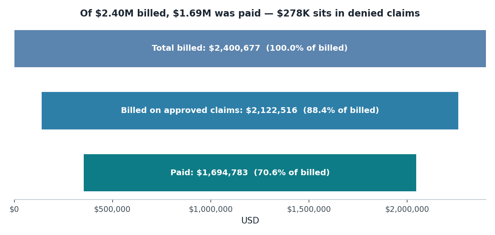
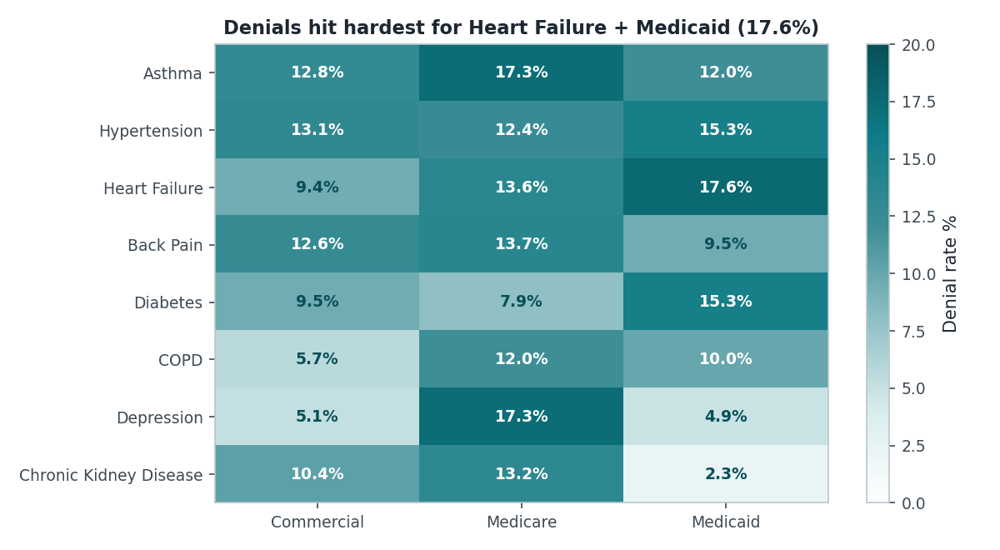
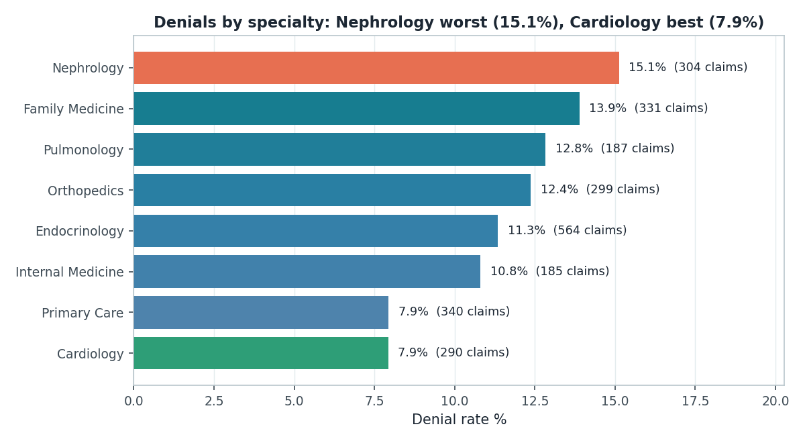
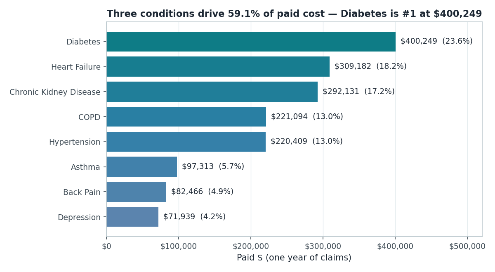
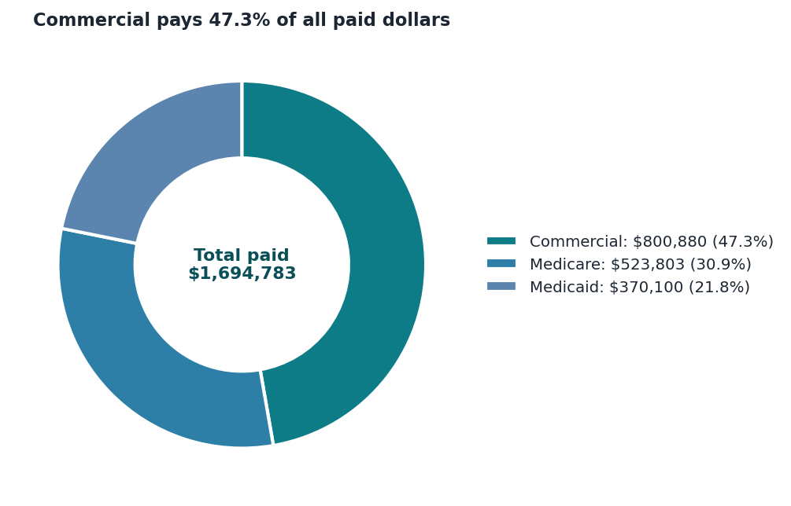
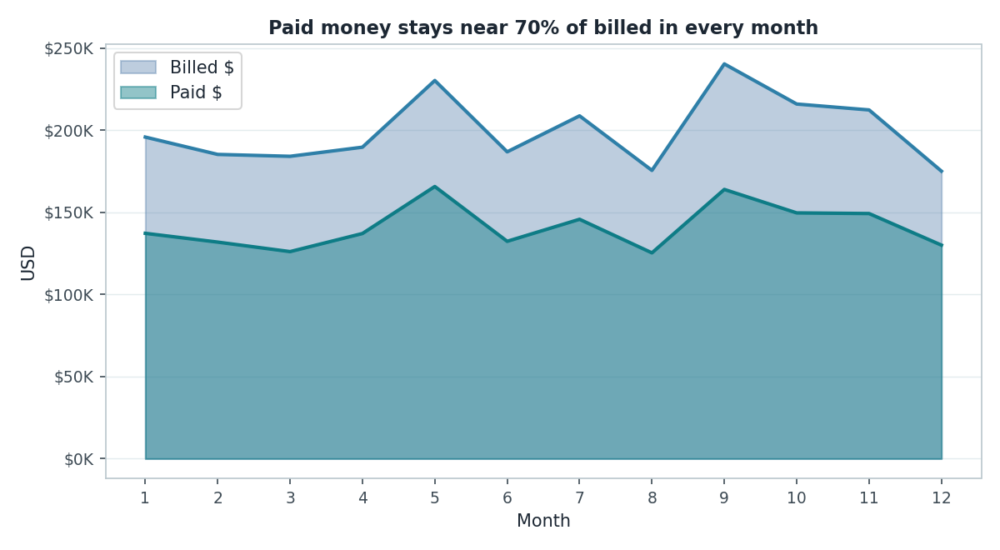
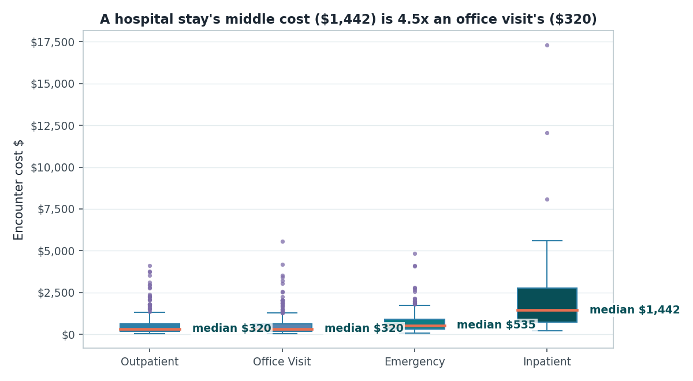
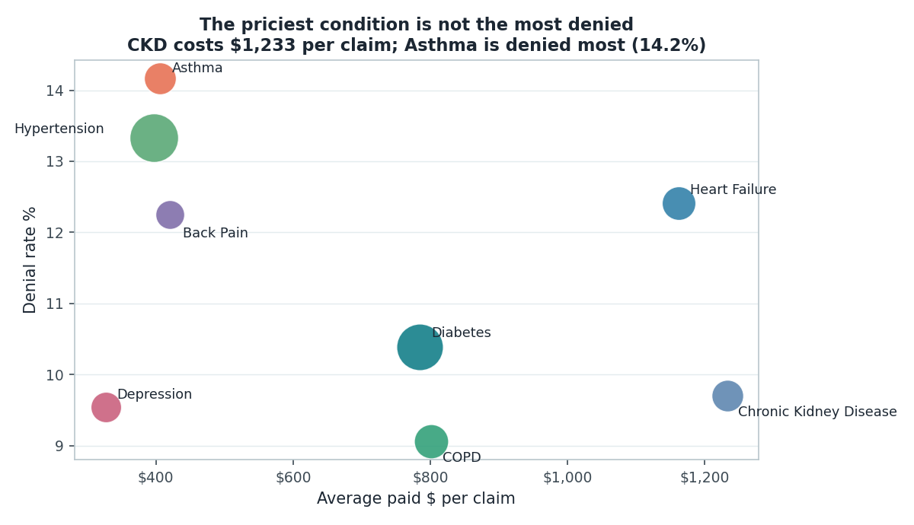
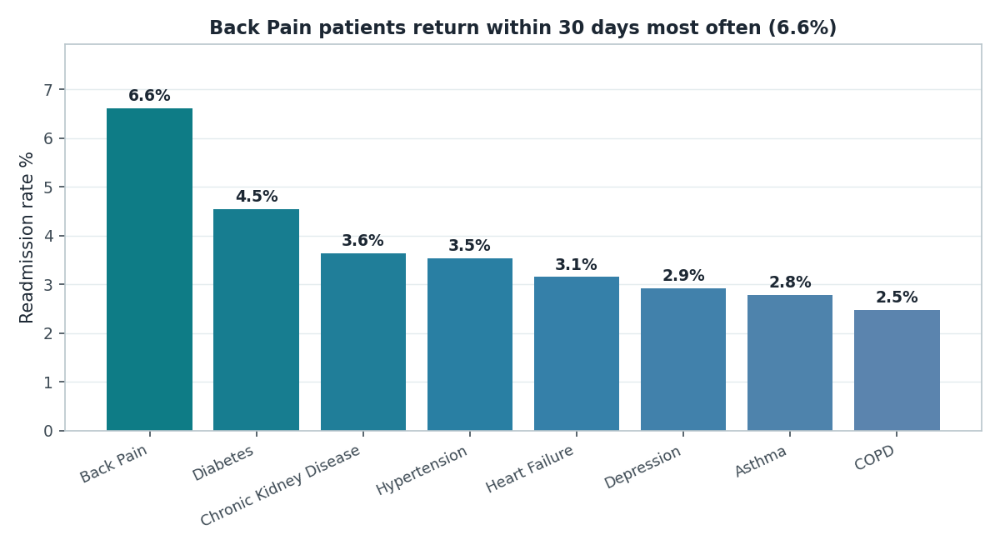
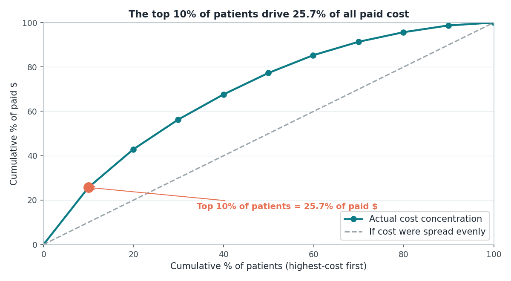

Module 1 — Claims & Revenue Cycle
Paid ratio 70.6%. Denials are concentrated: Prior authorization = 31.7% of all denials, then Coding error 25.8% and Eligibility 16.4% — a Pareto problem with a clear first fix.
Money funnel: of $2,400,677 billed, $278,161 sat in denied claims; $1,694,783 was paid — 79.8% of approved billed dollars. Denials hit hardest for Heart Failure claims from Medicaid members (17.6% denied) and softest for Chronic Kidney Disease claims from Medicaid members (2.3%).


Denials also cluster by doctor type: Nephrology (kidney) providers lose 15.1% of their claims while Cardiology loses only 7.9% — the fix belongs in specific specialties' paperwork, not spread evenly. Claim volume peaks in month 9 (237 claims), but the worst denial month is February (14.0%) — being busy is not what causes denials.

Module 2 — Cost & Utilization
PMPM $235.39; average cost per encounter $686.15; 2,000 encounters per 1,000 members. Three chronic conditions — Diabetes, Heart Failure, Chronic Kidney Disease — drive 59.1% of paid cost.

Commercial members account for 47.3% of paid dollars (Medicare 30.9%, Medicaid 21.8%). The paid share of billed money stays near 70% every month. One hospital stay costs a median of $1,442 versus $320 for an office visit — a small number of stays moves total cost.



| Condition | Claims | Paid $ | Share % |
|---|---|---|---|
| Diabetes | 510 | 400249.05 | 23.62 |
| Heart Failure | 266 | 309181.81 | 18.24 |
| Chronic Kidney Disease | 237 | 292131.38 | 17.24 |
| COPD | 276 | 221094.01 | 13.05 |
| Hypertension | 555 | 220408.53 | 13.01 |
| Asthma | 240 | 97313.28 | 5.74 |
| Back Pain | 196 | 82466.48 | 4.87 |
| Depression | 220 | 71938.76 | 4.24 |
Cost per claim and denial rate do not move together: Chronic Kidney Disease costs the most per claim ($1,233) with a below-average denial rate (9.7%), while Asthma is the most-denied condition (14.2%) at only $405 per claim.

Module 3 — Patient Outcomes
Readmission proxy 3.8% across all encounters and 25.5% for inpatient stays — the discharge-planning target. The top 10% of patients account for 25.7% of paid cost, defining the care-management cohort.
By condition, back-pain visits are the most likely to be a return within 30 days (6.6%) and COPD visits the least (2.5%). The concentration curve bends far above the "spread evenly" line: the top 59 patients (10% of those with claims) drive 25.7% of paid dollars, and the top half drives 77.3%.


Module 4 — Provider Performance
Highest denial rate: PR073 (Orthopedics) 25.9%; lowest with 20+ claims: PR058 (Primary Care) 0.0%. Full detail for all 80 providers is in outputs/provider_scorecard.csv.
Top 5 providers by paid
| Provider | Specialty | Claims | Paid $ | Denial % | Patients |
|---|---|---|---|---|---|
| PR006 | Family Medicine | 36 | 45467.28 | 13.89 | 36 |
| PR055 | Endocrinology | 48 | 38868.91 | 6.25 | 46 |
| PR034 | Endocrinology | 40 | 37616.10 | 12.50 | 40 |
| PR059 | Nephrology | 32 | 36960.95 | 9.38 | 32 |
| PR045 | Endocrinology | 34 | 34794.36 | 20.59 | 33 |
Highest denial rates
| Provider | Specialty | Claims | Denial % |
|---|---|---|---|
| PR073 | Orthopedics | 27 | 25.93 |
| PR016 | Orthopedics | 24 | 25.00 |
| PR070 | Nephrology | 29 | 24.14 |
| PR072 | Nephrology | 26 | 23.08 |
| PR019 | Nephrology | 35 | 22.86 |
Full data, SQL, notebook and methodology: see README.md and outputs/ in this repo.